Block Cipher & DES
Penjelasan dibuat sederhana, lengkap dengan gambar dari slide dosen dan cara hafal.
A. Enkripsi simetris vs asimetris
| Aspek | Simetris | Asimetris |
|---|---|---|
| Kunci | satu kunci untuk enkripsi dan dekripsi | sepasang kunci: public (enkripsi), private (dekripsi) |
| Kecepatan | lebih cepat, cocok untuk data besar | lebih lambat |
| Membagikan kunci | butuh jalur aman untuk berbagi kunci rahasia | kunci public boleh disebar bebas |
| Contoh algoritma | AES, DES, Blowfish | RSA, ECC, ElGamal |
| Kegunaan | enkripsi file, enkripsi seluruh disk | pertukaran kunci aman, tanda tangan digital |
| Risiko | kalau kunci bocor, enkripsi dan dekripsi sama-sama bobol | lebih tahan sadapan, tetapi komputasi lebih berat |
B. Stream cipher dan block cipher
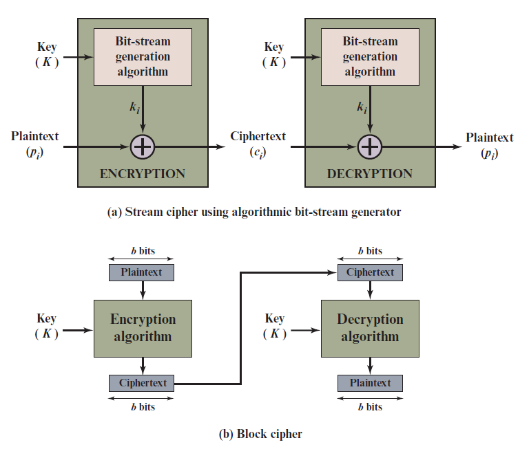
| Stream cipher | Block cipher | |
|---|---|---|
| Cara kerja | mengenkripsi data sedikit demi sedikit (1 bit atau 1 byte) terus-menerus | mengenkripsi data per blok (biasanya 64 atau 128 bit), hasilnya blok ciphertext dengan panjang sama |
| Contoh | Vigenère yang dikunci otomatis (autokeyed), Vernam | DES, AES |
| Intinya | plaintext di-XOR dengan keystream dari kunci | satu blok plaintext + kunci → satu blok ciphertext |
- Kalau keystream acak dan sepanjang plaintext (one-time pad), cipher tidak bisa dipecahkan kecuali keystream didapat. Masalahnya, keystream harus dikirim lebih dulu lewat jalur aman, repot untuk data besar. Solusinya: keystream dibuat oleh algoritma dari satu kunci yang sama-sama dimiliki.
- Block cipher bisa dipakai untuk meniru stream cipher (itulah gunanya modes of operation di Bab 4).
- Sebagian besar block cipher simetris memakai struktur Feistel.
Confusion dan diffusion (ide Shannon)
| Artinya | Gambaran | |
|---|---|---|
| Diffusion | menyebarkan pola plaintext ke seluruh ciphertext | mengaduk adonan: satu bahan menyebar ke mana-mana |
| Confusion | membuat hubungan antara ciphertext dan kunci sangat rumit | menyamarkan resep, sehingga kunci tidak bisa ditebak dari hasil |
C. Feistel cipher
Ide Feistel: jangan buat satu cipher raksasa, tapi ulang-ulang beberapa cipher sederhana secara berurutan (disebut product cipher). Hasil akhirnya lebih kuat daripada tiap bagiannya. Cipher sederhana itu bergantian memakai:
| Operasi | Artinya |
|---|---|
| Substitution (substitusi) | satu elemen plaintext diganti elemen ciphertext tertentu |
| Permutation (permutasi) | urutan elemen diacak; tidak ada yang ditambah atau dihapus, hanya posisinya berpindah |
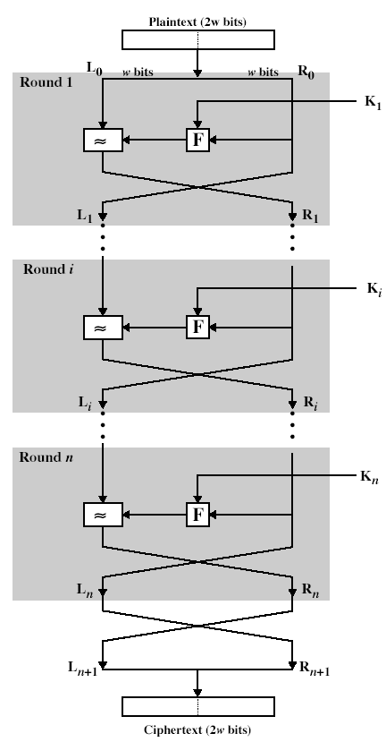
L baru = R lamaR baru = L lama XOR F(R lama, kunci round)Jadi: sisi kanan pindah ke kiri; sisi kiri di-XOR dengan hasil fungsi F lalu jadi sisi kanan.
Hal yang menentukan kekuatan Feistel (design principles)
| Faktor | Kalau diperbesar |
|---|---|
| Block size | lebih aman, tapi lebih lambat |
| Key size | lebih aman (brute force makin sulit), tapi bisa lebih lambat |
| Jumlah round | lebih aman, tapi lebih lambat |
| Subkey generation (key schedule) | makin rumit, makin sulit dianalisis, tapi lebih lambat |
| Round function F | makin rumit, makin sulit dianalisis, tapi lebih lambat |
Kekuatan Feistel bersumber dari 3 hal: jumlah round (makin banyak makin sulit dianalisis), fungsi F (inti yang memberi confusion; harus nonlinear), dan key schedule (subkey harus sulit ditebak dan sulit dirunut ke kunci utama; disebut juga key avalanche).
D. DES (Data Encryption Standard)
- Dikeluarkan tahun 1977 oleh National Bureau of Standards (sekarang NIST) sebagai FIPS PUB 46. Algoritmanya bernama DEA (Data Encryption Algorithm).
- Sebelum AES (2001), DES adalah skema enkripsi yang paling banyak dipakai.
- Memasukkan 64 bit plaintext dan 56 bit kunci (kunci aslinya 64 bit, 8 bitnya paritas atau diabaikan), menghasilkan 64 bit ciphertext.
- Langkah yang sama dengan kunci yang sama dipakai untuk membalik enkripsi (dekripsi).
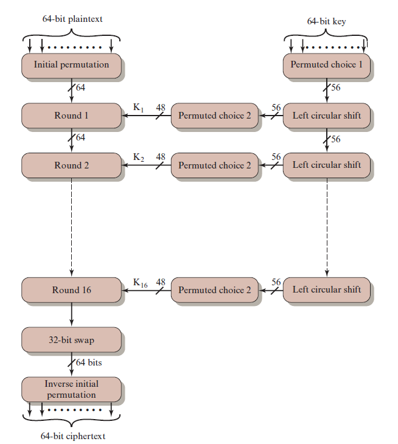
Alur besar DES (6 langkah)
- Blok plaintext 64 bit masuk ke Initial Permutation (IP): bit-bitnya diacak urutannya.
- Hasilnya dibagi dua: LPT (Left Plain Text, 32 bit) dan RPT (Right Plain Text, 32 bit).
- LPT dan RPT melewati 16 round.
- Setelah round 16, LPT dan RPT digabung lagi.
- Dilakukan Final Permutation (FP), cuma sekali di akhir (kebalikan dari IP).
- Hasilnya: ciphertext 64 bit.
IP(675a6967 5e5a6b5a) = (ffb2194d 004df6fb). Artinya: 64 bit (ditulis hex) diacak jadi 64 bit baru, lalu dibelah dua: kiri = ffb2194d, kanan = 004df6fb.E. Satu round DES: 5 langkah
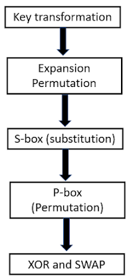
Untuk dekripsi, algoritmanya sama, tetapi urutan 16 subkey dibalik (K16 dipakai dulu, K1 paling akhir).
Langkah 1: Key transformation (membuat subkey)
- Kunci 56 bit dibagi dua: masing-masing 28 bit (C dan D).
- Tiap setengah digeser melingkar ke kiri (circular left shift). Geser 1 posisi untuk round 1, 2, 9, 16; geser 2 posisi untuk round lainnya.
Compression permutation (56 bit → 48 bit)
56 bit hasil geser dipadatkan jadi 48 bit (subkey K). Bit nomor 9, 18, 22, 25, 35, 38, 43, dan 54 dibuang. Tabel permutasi di slide:
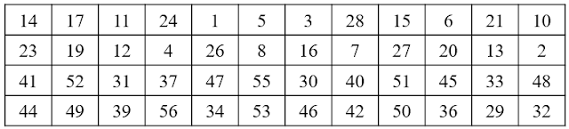
Langkah 2: Expansion permutation (32 bit → 48 bit)
RPT 32 bit dibagi jadi 8 blok × 4 bit. Tiap blok 4 bit dilebarkan jadi 6 bit (dengan meminjam 1 bit dari tetangga kiri dan 1 dari tetangga kanan), sehingga hasilnya 8 × 6 = 48 bit.
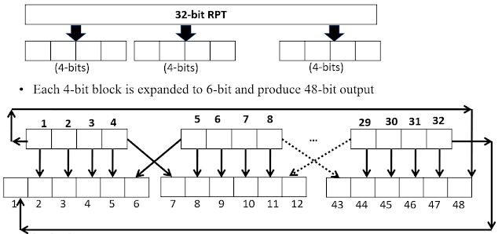
Lalu 48 bit ini di-XOR dengan subkey 48 bit. Hasilnya (48 bit) masuk ke S-box.
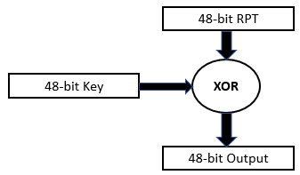
Langkah 3: S-box substitution (48 bit → 32 bit)
48 bit dibagi jadi 8 grup, tiap grup 6 bit. Tiap grup masuk ke satu S-box dan keluar 4 bit (8 × 4 = 32 bit). Cara membaca S-box:
- Bit pertama dan bit keenam digabung = nomor baris (0–3).
- Empat bit tengah = nomor kolom (0–15).
- Angka di tabel pada baris dan kolom itu diubah ke 4 bit.
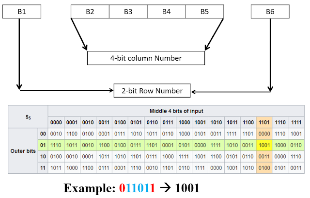
011011: bit pertama 0 dan bit terakhir 1 → baris 01 = 1. Empat bit tengah 1101 → kolom 13. Nilai di tabel itu ditulis 4 bit → 1001.Langkah 4: P-box permutation (32 bit → 32 bit)
Keluaran S-box (32 bit) diacak urutannya memakai tabel P-box. Contoh di slide: bit ke-16 dari S-box pindah ke posisi 1.
Langkah 5: XOR dan swap
Hasil P-box di-XOR dengan LPT. Hasilnya jadi RPT yang baru. LPT yang baru adalah RPT yang lama (inilah "swap", bertukar tempat). Round berikutnya mengulang dari langkah 1 dengan subkey berikutnya.
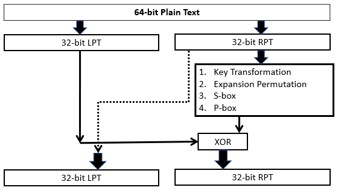
Final Permutation (setelah round 16)
Setelah 16 round, dilakukan Final Permutation sekali. Contoh di slide: bit ke-40 dari input pindah ke posisi 1.
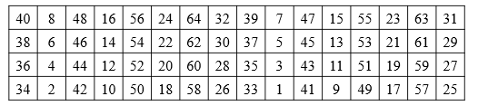
F. Contoh hitung 1 round DES (tambahan, opsional)
Bagian ini tidak ada di slide. Aku tambahkan supaya kamu bisa melihat angka sungguhan. Boleh dilewati kalau mau fokus ke materi slide.
Contoh ini memakai pasangan plaintext–key yang umum dipakai di buku/tutorial DES. Semua angka dihitung dengan kode, lalu dicocokkan dengan implementasi DES di library (hasil 16 round sama). Dasarnya sama dengan 5 tahap di atas: key transformation → expansion → XOR + S-box → P-box → XOR & swap.
0123456789ABCDEFKey (hex) =
133457799BBCDFF1Langkah 0 · Initial Permutation (IP)
Plaintext 64 bit: 0000 0001 0010 0011 0100 0101 0110 0111 1000 1001 1010 1011 1100 1101 1110 1111
Setelah IP (bit ke-i hasil = bit ke-IP[i] input; IP[1]=58, IP[2]=50, …): 1100 1100 0000 0000 1100 1100 1111 1111 1111 0000 1010 1010 1111 0000 1010 1010
R₀ (RPT) = 1111 0000 1010 1010 1111 0000 1010 1010
Tahap 1 · Key transformation (membuat K₁)
Key 64 bit → buang 8 bit paritas dan acak lewat PC-1 → 56 bit: 1111000 0110011 0010101 0101111 0101010 1011001 1001111 0001111
D₀ = 0101010 1011001 1001111 0001111
Round 1 geser kiri 1 posisi (lihat jadwal geser):
D₁ = 1010101 0110011 0011110 0011110
Gabung C₁D₁ (56 bit) → compression permutation (PC-2) memilih 48 bit:
Tahap 2 · Expansion permutation
R₀ (32 bit) diperluas jadi 48 bit. Tiap blok 4 bit mendapat 1 bit tetangga kiri dan 1 bit tetangga kanan (bit tepi melingkar).
Tahap 3 · XOR dengan K₁, lalu S-box
K₁ = 000110 110000 001011 101111 111111 000111 000001 110010
XOR = 011000 010001 011110 111010 100001 100110 010100 100111
Bagi jadi 8 grup × 6 bit. Tiap grup: bit pertama + bit terakhir = baris (biner → desimal), 4 bit tengah = kolom. Nilai di tabel S-box itu jadi 4 bit keluaran.
| S-box | Masuk (6 bit) | Baris | Kolom | Nilai tabel | Keluar (4 bit) |
|---|---|---|---|---|---|
| S1 | 011000 | 0 | 12 | 5 | 0101 |
| S2 | 010001 | 1 | 8 | 12 | 1100 |
| S3 | 011110 | 0 | 15 | 8 | 1000 |
| S4 | 111010 | 2 | 13 | 2 | 0010 |
| S5 | 100001 | 3 | 0 | 11 | 1011 |
| S6 | 100110 | 2 | 3 | 5 | 0101 |
| S7 | 010100 | 0 | 10 | 9 | 1001 |
| S8 | 100111 | 3 | 3 | 7 | 0111 |
Gabung 8 × 4 bit = 32 bit: 0101 1100 1000 0010 1011 0101 1001 0111
Tahap 4 · P-box
Tahap 5 · XOR & swap
= 1100 1100 0000 0000 1100 1100 1111 1111
⊕ 0010 0011 0100 1010 1010 1001 1011 1011
= 1110 1111 0100 1010 0110 0101 0100 0100
L₁ = R₀ = 1111 0000 1010 1010 1111 0000 1010 1010
F0AAF0AA R₁ = EF4A6544 (hex)Round 2–16 caranya sama persis (pakai K₂ … K₁₆). Setelah round 16, L dan R ditukar (R₁₆ L₁₆), lalu Final Permutation → ciphertext =
85E813540F0AB405.Latihan: contoh round
a) Pada contoh di atas, kalau masukan S1 = 011000, berapa baris dan kolomnya?
Lihat jawaban
Bit pertama = 0, bit terakhir = 0 → baris 00 = 0. Empat bit tengah = 1100 → kolom 12. Nilai S1 baris 0 kolom 12 = 5 → 0101.b) Kalau L₀ = 1100 dan f = 1010 (disederhanakan 4 bit), berapa R₁?
Lihat jawaban
R₁ = L₀ ⊕ f = 1100 ⊕ 1010 = 0110.c) Untuk dekripsi, subkey apa yang dipakai di round 1?
Lihat jawaban
K₁₆ (urutan subkey dibalik: K₁₆ di round 1, … K₁ di round 16).G. Kekuatan DES dan serangan
- Kunci 56 bit = 256 kemungkinan kunci (sekitar 7,2 × 1016). Dulu dianggap butuh ribuan tahun untuk brute force.
- Tapi sekarang bisa dipecahkan: tahun 1997 lewat internet dalam beberapa bulan; 1998 memakai mesin khusus (EFF) dalam beberapa hari; 1999 gabungan keduanya dalam 22 jam.
- Karena itu orang mencari pengganti DES.
- Kelebihan DES: S-box-nya rumit sehingga serangan sulit, dan DES bersifat reversible (bisa dibalik).
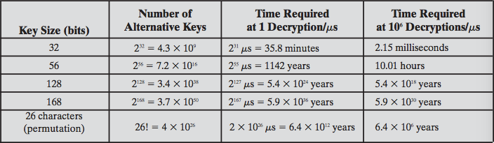
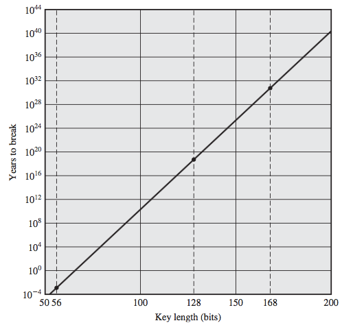
Serangan pada enkripsi simetris
| Serangan | Artinya |
|---|---|
| Cryptanalysis | mengandalkan sifat algoritma, ditambah pengetahuan tentang plaintext atau contoh pasangan plaintext–ciphertext, untuk menebak plaintext atau kunci |
| Brute-force | mencoba semua kunci pada ciphertext sampai muncul plaintext yang masuk akal |
Linear cryptanalysis
- Termasuk known plaintext attack (penyerang punya pasangan plaintext–ciphertext).
- Mencari hubungan linear yang berpeluang tinggi (linear approximation) antara bit plaintext, ciphertext, dan kunci, lalu memakainya untuk menebak bit kunci.
- Ditemukan oleh Mitsuru Matsui, pertama dipakai pada cipher FEAL. Bersama differential cryptanalysis, ini serangan yang umum untuk block cipher.
- Bisa menemukan kunci DES dengan 243 known plaintext (dibandingkan 247 chosen plaintext untuk differential). Tetap sulit dilakukan di praktik.
H. DES, Triple DES, dan AES
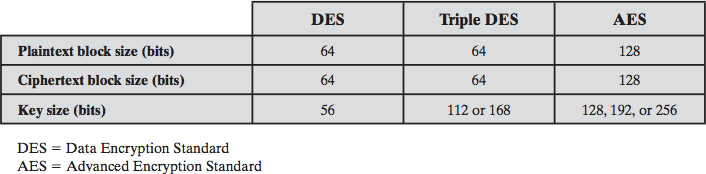
| DES | Triple DES | AES | |
|---|---|---|---|
| Ukuran plaintext/ciphertext | 64 bit | 64 bit | 128 bit |
| Ukuran kunci | 56 bit | 112 atau 168 bit | 128, 192, atau 256 bit |
Triple-DES = menjalankan DES tiga kali dengan 2 atau 3 kunci berbeda. Jauh lebih aman, tapi jauh lebih lambat.
Tes diri (tutup jawaban dulu, coba jawab sendiri)
1) Sebutkan ukuran blok, ukuran kunci efektif, jumlah round, dan ukuran subkey DES.
Lihat jawaban
Blok 64 bit, kunci 56 bit, 16 round, subkey 48 bit.2) Apa beda stream cipher dan block cipher?
Lihat jawaban
Stream cipher mengenkripsi 1 bit/byte secara terus-menerus. Block cipher mengenkripsi per blok (mis. 64 atau 128 bit).3) Apa itu confusion dan diffusion?
Lihat jawaban
Diffusion: menyebarkan pola plaintext ke seluruh ciphertext. Confusion: membuat hubungan ciphertext dengan kunci sangat rumit.4) Tuliskan rumus satu round Feistel.
Lihat jawaban
L baru = R lama. R baru = L lama XOR F(R lama, kunci).5) Sebutkan 5 langkah dalam satu round DES.
Lihat jawaban
Key transformation, expansion permutation, S-box, P-box, XOR dan swap.6) Round berapa saja yang menggeser kunci hanya 1 posisi?
Lihat jawaban
Round 1, 2, 9, dan 16. Selain itu geser 2 posisi.7) Expansion permutation mengubah berapa bit jadi berapa bit? Kenapa perlu?
Lihat jawaban
32 bit jadi 48 bit, supaya ukurannya sama dengan subkey 48 bit untuk di-XOR.8) Pada S-box, bagaimana cara menentukan baris dan kolom dari 6 bit masukan?
Lihat jawaban
Baris = bit pertama + bit keenam. Kolom = 4 bit tengah. Hasilnya 4 bit.9) Bagaimana cara dekripsi DES?
Lihat jawaban
Pakai algoritma yang sama, tetapi urutan 16 subkey dibalik.10) Apa kelemahan utama DES?
Lihat jawaban
Kunci hanya 56 bit sehingga bisa di-brute force. Tahun 1999 dipecahkan dalam 22 jam.11) Linear cryptanalysis termasuk known plaintext atau chosen plaintext? Berapa data yang dibutuhkan untuk DES?
Lihat jawaban
Known plaintext. Sekitar 2^43 pasangan.12) Sebutkan 3 hal yang menentukan kekuatan Feistel cipher.
Lihat jawaban
Jumlah round, fungsi F, dan key schedule.13) Berapa ukuran kunci DES, Triple DES, dan AES?